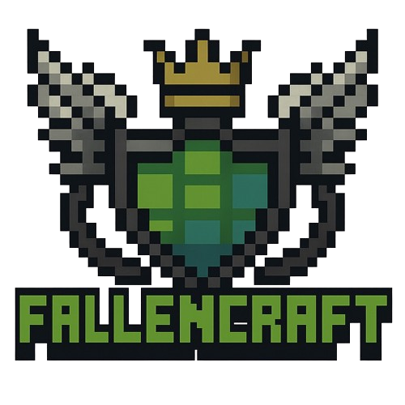

Minecraft & Discord Palvelin
Pääsivu
Säännöt
Ylläpitäjät
Ylläpitäjät
Admin1
– Palvelimen pääylläpitäjä
ModeraattoriX
– Discord-moderaattori
Admin2
– Minecraft-serverin ylläpitäjä
HelperY
– Apuna pelaajille ja yhteisön ylläpitoon